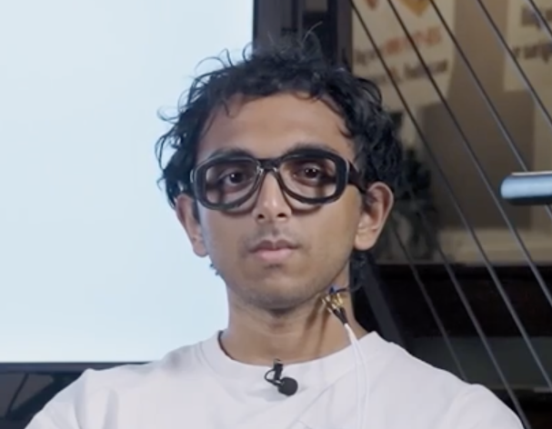

Primero a la venta
Antes Los sistemas de habla silenciosa se quedaban en anuncios, laboratorios y prototipos de investigación.
Ahora Cualquiera puede reservarlo desde el 30 de octubre de 2026.
Lanzado el 30 de octubre de 2026
Escribe en tu ordenador moviendo los labios, sin emitir ni un solo sonido.

01 · El dispositivo
Subvocal es un dispositivo de habla silenciosa: convierte en texto las palabras que pronuncias moviendo la boca, pero sin voz. Lo ha creado The Subvocal Company, una startup de San Francisco fundada en 2026 por dos estudiantes de informática de Georgia Tech, Aarush Yadav y Arnav Kumar.
Tiene forma de montura de gafas, pero no son unas gafas inteligentes: la montura solo sirve para colocar los sensores junto a la cara. No lleva cámaras: su función es convertir el habla silenciosa en texto y en órdenes para el ordenador.
Está pensado para los momentos en los que no puedes hablar en voz alta ni usar el teclado con comodidad: una oficina abierta, el tren, una biblioteca o una reunión.
Los proyectos de habla silenciosa más conocidos, como AlterEgo o EchoSpeech, nunca llegaron a venderse. Subvocal ya se puede reservar.

02 · Lo que lo hace único
La idea de «hablar sin voz» con un ordenador lleva más de veinte años investigándose, pero los proyectos más conocidos nunca llegaron a venderse. Subvocal es un producto totalmente nuevo: es el primero de una empresa nacida en 2026, no es la versión mejorada de ningún aparato anterior y usa una forma de detectar el habla, las ondas de radio, que los proyectos anteriores no empleaban.
Antes Los sistemas de habla silenciosa se quedaban en anuncios, laboratorios y prototipos de investigación.
Ahora Cualquiera puede reservarlo desde el 30 de octubre de 2026.
Antes Había que pegar electrodos en la cara o grabar la boca con cámaras y ecógrafos.
Ahora Emite ondas de radio de baja potencia que atraviesan la cara y detectan cómo se mueven la lengua, los labios y el paladar.
Antes El prototipo con gafas más conocido, EchoSpeech, reconocía como mucho 31 órdenes.
Ahora Escribe cualquier frase, con una velocidad que la empresa sitúa por encima de 200 palabras por minuto.
Antes Los sistemas con electrodos solían necesitar ajustes para cada persona e incluso para cada sesión.
Ahora Basta con leer unas 20 frases para calibrarlo la primera vez.
03 · Beneficios para la IPO
Lo he elegido porque abre un canal de entrada nuevo entre la persona y el ordenador. No es un teclado más rápido ni un micrófono mejor, sino una tercera vía que mezcla lo mejor de ambos.
Según sus creadores, la mayoría de la gente teclea a unas 40–50 palabras por minuto, mientras que hablando se llega a 120–200. Subvocal busca esa velocidad sin necesidad de voz.
Como no hay sonido, no molestas a nadie ni compartes lo que escribes con quien está al lado. Es el gran problema de los asistentes de voz que resuelve.
Se puede escribir mientras las manos están ocupadas o lejos del teclado.
Solo interpreta las palabras que pronuncias a propósito: no lee el pensamiento ni está siempre escuchando.
No hay que aprender gestos ni atajos: basta con «hablar» como siempre, pero sin voz.
Permite escribir mensajes largos a los asistentes de inteligencia artificial en cualquier lugar, sin teclear ni hablar en voz alta.
04 · Funcionamiento
La primera vez hay que leer unas 20 frases para que el sistema se adapte a tu forma de articular. Según sus creadores, lleva alrededor de un minuto.
Sus creadores aseguran que, con práctica, también funciona con «habla interna», es decir, moviendo solo la lengua con los labios cerrados.
05 · Ficha técnica
| Elemento | Detalle |
|---|---|
| Tipo | Dispositivo de entrada por habla silenciosa, en montura de gafas |
| Tecnología | Ondas de radio (RF) de baja potencia; sin cámaras ni electrodos |
| Velocidad | Más de 200 palabras por minuto, según la empresa |
| Retardo | Normalmente menos de 0,5 segundos |
| Calibración | Unas 20 frases la primera vez |
| Idioma | Solo inglés en el lanzamiento |
| Conexión | Necesita Internet: el texto se descifra en la nube |
| Precio | 499 $ en reserva anticipada (precio normal: 699 $) |
| Reserva | Depósito de 199 $ reembolsable; solo envíos a EE. UU. |
| Disponibilidad | Reservas desde el 30/10/2026 · envíos previstos en el primer trimestre de 2027 |
| Fabricante | The Subvocal Company (San Francisco), del programa Y Combinator de otoño de 2026 |
06 · Historia
Subvocal no tiene versiones anteriores, pero sí viene a sustituir a dos formas de escribir que usamos a diario: el teclado (físico o táctil), que es silencioso pero lento, y el dictado por voz de los asistentes, que es rápido pero obliga a hablar en voz alta.
La operadora japonesa NTT DoCoMo anuncia un móvil silencioso que leía los músculos de la cara (electromiografía) y el movimiento de los labios, con la idea de evitar el ruido en lugares públicos.
El centro Ames de la NASA investiga cómo reconocer palabras pronunciadas en silencio a partir de las señales de los músculos del habla.
Cuando el físico dejó de poder usar un pulsador con el dedo, empezó a escribir con un sensor de infrarrojos montado en sus gafas que detectaba el movimiento de su mejilla. Elegía las letras una a una y, en sus últimos años, apenas llegaba a 1 o 2 palabras por minuto.
Los investigadores prueban a «ver» la boca por dentro con ultrasonidos y cámaras, o a seguir la lengua con sensores electromagnéticos. Los resultados son prometedores, pero no salen del laboratorio.
Un estudio del MIT Media Lab traduce en palabras las señales neuromusculares del habla interna. Sigue sin venderse al público.
Un prototipo de investigación con forma de gafas usa sonar para reconocer hasta 31 órdenes. Tampoco llega a venderse.
Yadav y Kumar crean el primer prototipo en el hackathon TreeHacks de la Universidad de Stanford, todavía con electrodos pegados a la cara.
Un aparato que se colocaba detrás de la oreja y reconocía letra a letra a unas 30 palabras por minuto. Después cambian los electrodos por ondas de radio, lo que permite la montura de gafas.
Se abren las reservas: el habla silenciosa pasa del laboratorio a un producto que cualquiera puede encargar.
Más rápido y sin necesidad de usar las manos.
Igual de natural, pero silencioso y privado.
Pasa de elegir letra a letra, a 1 o 2 palabras por minuto, a descifrar palabras completas.
Escribe frases completas, no una lista cerrada de órdenes.
07 · Visión crítica
08 · Enlaces